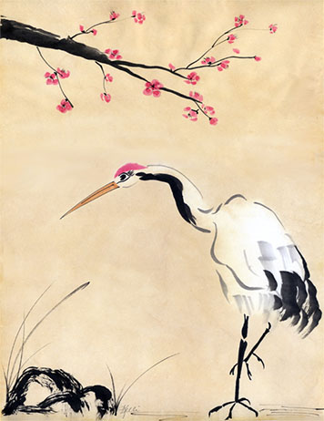

About: The Lantern Festival is the last day of the Chinese New Year Celebration. During this holiday, children hang bright and colorful lanterns and solve riddles written on the lanterns. It is also a time to eat tanyuan, sweet glutinous rice balls, as well as hold family reunions.
Date: 15th day of the first lunar month
Lore
The Jade Emperor, who rules the heavens, is the highest diety in Chinese myths. Once upon a time, the Jade Emperor's favorite crane flew down to Earth to explore. The villagers, not knowing that the crane is dear to supreme diety, killed the crane in a hunt. This drew the ire of the Jade Emperor, who vowed to incinerate the village the next day.
The villagers were distraught at their impending fiery doom. However, the Supreme Emperor's daughter, who had compassion on the humans, advised the people to hang up red lanterns everywhere in the village. The next day, the Jade Emperor looked down and saw that the village was brightly lit, dotted all over with red spots of light. As a result, the Emperor mistakenly thought the village was already consumed by fire. Satisfied, he turned away and did not exact vengenace himself.
The villagers rejoiced at their salvation. To commemorate, every year on the Lantern Festival, people carry lanterns with them when they are outside and decorate the towns aplomb with many lanterns.
Traditions
Given its name, Lantern Festival is a day where the towns are decked out with lanterns. People also carry lanterns around as they walk outside. The lanterns can be in different shapes, sizes, and colors. Some are even collapsible. Lanterns can be homemade and are usually made out of paper with a candle inside. The outside can be beautifully decorated with patterns or paintings of scenery or scenes from well-known myths.
Another tradition on this holiday is to tell "Lantern Riddles." The riddles can be written on strips of papers hanging from the lanterns, or on the lanterns themselves. Even without lanterns, children often just tell riddles to each other. An example riddle is "This lovely maiden eats no meat but eats leaves. She labours each day spinning and weaving for the benefit of others. Who is she?" (Answer: "mrowklis" backwards).
Food
The most common food on Lantern Festival is the tanyuan, which are balls made of glutinous rice flour either as a whole, or with different kinds of fillings inside. Fillings can be made of sesame, red bean, peanut paste. The tanyuan balls are sweet and are usually eaten along with the soup they are cooked in. Their outside is usually white, but can be dyed different colors.